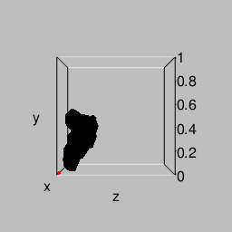
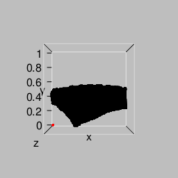
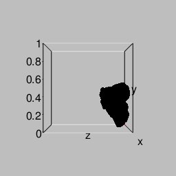
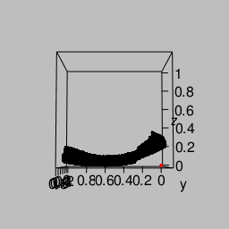

STEREOLITHOGRAPHY_FILE %>%
load_data() -> raw_data
make_model( raw_data ) -> model # Read the stereolithography file and create a modelmodel$move_backward( 4.5 ) # The prototype potsherd model isn't tight against the origin
offset <- apply( model$get(), 2, min ) # Find the distance from each axis to the nearest model point
model$move_left( offset[ 'x' ] ) # Remove the offset, effectively pushing the object
model$move_down( offset[ 'y' ] ) # into the corner
model$move_backward( offset[ 'z' ] )
model$show( LEFT_VIEW ) # Create the first of three figures shown below
make_figure( 'initial_view' ) # and include it in this document
model$move_right( 0.4 ) # Move the model away from the X-Y plane, so
model$move_forward( 0.4 ) # there will be space to rotate it
model$show( LEFT_VIEW ) # Create the second figure
make_figure( 'second_view' ) # and include it in this document
model$rotate_about_x( 15 ) # Make the rim parallel with the X-Z plane
model$show( LEFT_VIEW ) # Create the third figure
make_figure( 'third_view' ) # and include it in this document
offset <- apply( model$get(), 2, min )
model$move_left( offset[ 'x' ] )
model$move_down( offset[ 'y' ] )
model$move_backward( offset[ 'z' ] )
model$show( LEFT_VIEW )
make_figure( 'end_view_1' )
model$show( FRONT_VIEW )
make_figure( 'front_view' )
#
model$show( TOP_VIEW_C )
make_figure( 'top_view' )
#
model$show( RIGHT_VIEW )
make_figure( 'end_view_2' )
# 

saveRDS( model$get(), MODEL_FILE )